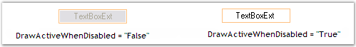
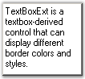
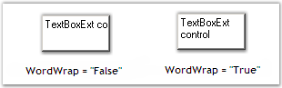
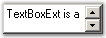
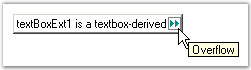
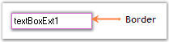
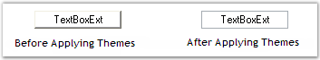

This section discusses the text settings of the TextBoxExt control.
The text associated with the TextBoxExt control can be set and customized using the below given settings.
|
TextBoxExt Properties |
Description |
|
Text |
Specifies the text associated with the control. |
|
CharacterCasing |
Gets / sets the case of character as they are typed.
It includes the below given options:
Normal, Upper and Lower. |
|
TextAlign |
Indicates how the text should be aligned for edit controls. |
|
RightToLeft |
Indicates whether the component should draw right to left for RTL languages. |
|
SelectedText |
Gets / sets a value indicating the currently selected text in the control. |
|
HideSelection |
Indicates that the selection should be hidden, when the edit control loses focus. |
|
DrawActiveWhenDisabled |
Specifies if the text should be drawn active, even when disabled. |
|
[C#]
this.textBoxExt1.CharacterCasing = System.Windows.Forms.CharacterCasing.Lower; this.textBoxExt1.TextAlign = System.Windows.Forms.HorizontalAlignment.Center; this.textBoxExt1.RightToLeft = System.Windows.Forms.RightToLeft.Yes; this.textBoxExt1.SelectedText = "TextBoxExt"; this.textBoxExt1.HideSelection = true; this.textBoxExt1.DrawActiveWhenDisabled = true; |
|
[VB.NET]
Me.textBoxExt1.CharacterCasing = System.Windows.Forms.CharacterCasing.Lower Me.textBoxExt1.TextAlign = System.Windows.Forms.HorizontalAlignment.Center Me.textBoxExt1.RightToLeft = System.Windows.Forms.RightToLeft.Yes Me.textBoxExt1.SelectedText = "TextBoxExt" Me.textBoxExt1.HideSelection = True Me.textBoxExt1.DrawActiveWhenDisabled = True |
Figure 566: Character Case set to "Lower"
Figure 567: Text Aligned to the "Center"
Figure 568: RightToLeft property set to "True"

Figure 569: DrawActiveWhenDisabled property Set
The methods associated with the above properties are given below.
|
Methods |
Description |
|
AppendText |
Appends text to the current text of a textbox. |
|
OnCharacterCasingChanged |
Raises the CharacterCasingChanged event. |
|
GetClipText |
Gets / sets the clipped text without the formatting. |
|
Cut |
Cuts the selected data to the clipboard. |
|
Copy |
Copies the content of the NumberTextBox to the clipboard. The ClipMode property dictates what gets copied. |
|
Delete |
Deletes the current selection of the TextBox. |
|
Paste |
Pastes the data in the clipboard into the NumberTextBox control. |
|
Select |
Selects a range of text in the TextBox. |
|
SelectAll |
Selects all text in the TextBox. |
Multiline Text Settings
The text settings of the TextBoxExt control can be customized to display multiline text using the below given properties.
|
TextBoxExt Properties |
Description |
|
Multiline |
Controls whether the text of the edit control can span more than one line. |
|
Lines |
The lines of text in a multiline edit, as an array of string values. |
|
WordWrap |
Indicates if lines are automatically word-wrapped for multiline edit controls. |
|
ScrollBars |
Indicates for multiline edit controls, which scrollbars will be shown for this control.
It includes the below given options.
None, Horizontal, Vertical and Both. |
|
[C#]
this.textBoxExt1.Multiline = true; this.textBoxExt1.WordWrap = true; this.textBoxExt1.ScrollBars = System.Windows.Forms.ScrollBars.Vertical; |
|
[VB.NET]
Me.textBoxExt1.Multiline = True Me.textBoxExt1.WordWrap = True Me.textBoxExt1.ScrollBars = System.Windows.Forms.ScrollBars.Vertical |

Figure 570: Multiline Text

Figure 571: WordWrap property Set

Figure 572: ScrollBars set for TextBoxExt Control
 Note: The ScrollToCaret() method
can be used to scroll the contents of the control to the current caret
position.
Note: The ScrollToCaret() method
can be used to scroll the contents of the control to the current caret
position.
OverflowIndicatorToolTipText
The tooltip that should be displayed when an overflow of text occurs can be set using the below given properties.
|
TextBoxExt Properties |
Description |
|
OverflowIndicatorToolTipText |
Specifies the overflow indicator tooltip text. |
|
ShowOverflowIndicator |
Gets / sets overflow indicator visibility. |
|
ShowOverflowIndicatorToolTip |
Indicates whether to show the overflow indicator tooltip. |
|
[C#]
this.textBoxExt1.ShowOverflowIndicator = true; this.textBoxExt1.ShowOverflowIndicatorToolTip = true; this.textBoxExt1.OverflowIndicatorToolTipText = "Overflow"; |
|
[VB.NET]
Me.textBoxExt1.ShowOverflowIndicator = True Me.textBoxExt1.ShowOverflowIndicatorToolTip = True Me.textBoxExt1.OverflowIndicatorToolTipText = "Overflow" |

Figure 573: Overflow Indicator ToolTip Text Set
Note: If there is no value set
for the OverflowIndicatorToolTipText property, then the value set for
the Text property of the TextBoxExt will be displayed as the
tooltip.
A sample which demonstrates the Text, Text Align, Character Casing, RightToLeft, Multiline, Word Wrap, ScrollBars and Overflow Indicator ToolTip features of TextBoxExt control is available in the below sample installation path.
..My Documents\Syncfusion\EssentialStudio\Version Number\Windows\Tools.Windows\Samples\2.0\Editors Package\EditorControls
3.3.8.10.3.2.1 Background Settings
The background settings of the TextBoxExt control are
discussed below.
Background Color
The background color of the control can be set using the property given below.
|
TextBoxExt Property |
Description |
|
BackColor |
Specifies the background color of the component. |
|
[C#]
this.textBoxExt1.BackColor = System.Drawing.Color.Moccasin; |
|
[VB.NET]
Me.textBoxExt1.BackColor = System.Drawing.Color.Moccasin |
Figure 574: Background Color set for TextBoxExt
3.3.8.10.3.2.2 Foreground Settings
The foreground settings of the TextBoxExt control are discussed below.
Foreground Color
The foreground color of the control can be set using the property given below.
|
TextBoxExt Property |
Description |
|
ForeColor |
Gets / sets the foreground color of the spin box (also known as an up-down control). |
|
[C#]
this.textBoxExt1.ForeColor = System.Drawing.Color.LightSeaGreen; |
|
[VB.NET]
Me.textBoxExt1.ForeColor = System.Drawing.Color.LightSeaGreen |
Figure 575: Foreground Color set for TextBoxExt
The behavior settings of the TextBoxExt control are discussed below.
MaxLength
The maximum length of the text can be set using the property given below.
|
TextBoxExt Property |
Description |
|
MaxLength |
Specifies the maximum number of characters that can be entered into the edit control. The default value is set to '32767'. |
|
[C#]
this.textBoxExt1.MaxLength = 32800; |
|
[VB]
Me.textBoxExt1.MaxLength = 32800 |
ReadOnly
The ReadOnly mode can be enabled for the TextBoxExt control using the below given property.
|
TextBoxExt Property |
Description |
|
ReadOnly |
Specifies whether the text in the edit control can be changed or not. |
|
[C#]
this.textBoxExt1.ReadOnly = true; |
|
[VB]
Me.textBoxExt1.ReadOnly = True |
A sample which demonstrates the ReadOnly mode of TextBoxExt control is available in the below sample installation path.
..My Documents\Syncfusion\EssentialStudio\Version Number\Windows\Tools.Windows\Samples\2.0\Editors Package\EditorControls
The border settings of the TextBoxExt control are discussed in this section.
Color and Styles can be applied to the border of the TextBoxExt control as discussed below.
|
TextBoxExt Properties |
Description |
|
Border3DStyle |
Indicates the style of the 3D border. The options included are as follows:
RaisedOuter, SunkenOuter, RaisedInner, SunkenInner, Raised, Etched, Bump, Sunken, Adjust and Flat.
The default value is set to 'Sunken'. |
|
BorderColor |
Specifies the color of the 2D border. |
|
BorderSides |
Indicates the border sides of the panel. The options included are as follows:
Left, Top, Right, Bottom, Middle and All. |
|
BorderStyle |
Indicates whether the edit control should have a border. The options included are given below:
FixedSingle, Fixed3D and None. |
|
[C#]
this.textBoxExt1.Border3DStyle = System.Windows.Forms.Border3DStyle.Raised; this.textBoxExt1.BorderColor = System.Drawing.Color.Orchid this.textBoxExt1.BorderSides = System.Windows.Forms.Border3DSide.All; this.textBoxExt1.BorderStyle = System.Windows.Forms.BorderStyle.FixedSingle; |
|
[VB.NET]
Me.textBoxExt1.Border3DStyle = System.Windows.Forms.Border3DStyle.Raised Me.textBoxExt1.BorderColor = System.Drawing.Color.Orchid Me.textBoxExt1.BorderSides = System.Windows.Forms.Border3DSide.All Me.textBoxExt1.BorderStyle = System.Windows.Forms.BorderStyle.FixedSingle |

Figure 576: TextBoxExt with Border Set
A sample which demonstrates the Border Settings of TextBoxExt control is available in the below sample installation path.
..My Documents\Syncfusion\EssentialStudio\Version Number\Windows\Tools.Windows\Samples\2.0\Editors Package\EditorControls
The layout settings of the TextBoxExt control are discussed in this section.
The size of the TextBoxExt control can be set according to the needs of the user using the properties discussed below.
|
TextBoxExt Properties |
Description |
|
MaximumSize |
Gets / sets the maximum size for the control. |
|
MinimumSize |
Gets / sets the minimum size for the control. |
|
[C#]
this.textBoxExt1.MaximumSize = new System.Drawing.Size(150, 20); this.textBoxExt1.MinimumSize = new System.Drawing.Size(150, 20); |
|
[VB.NET]
Me.textBoxExt1.MaximumSize = New System.Drawing.Size(150, 20) Me.textBoxExt1.MinimumSize = New System.Drawing.Size(150, 20) |
Figure 577: Size of the TextBoxExt control Set
Themes defines the look and feel of the control. This can be enabled using the below given property.
|
TextBoxExt Property |
Description |
|
ThemesEnabled |
Specifies whether or not to use XP themes, when BorderStyle is set to 'Fixed3D'. |
|
[C#]
this.textBoxExt1.ThemesEnabled = true; |
|
[VB]
Me.textBoxExt1.ThemesEnabled = True |

Figure 578: ThemesEnabled property Set